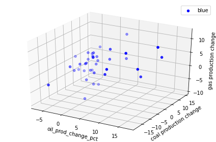

ENERGY CONSUMPTION
Click on images for source code
Graph 1
Comparing the coal production change and the energy consumption change of China, India and the United States from 1982 - 2019
Graph 2
Comparing the proportion of coal and gas consumption change of the United States from 1982-2019
